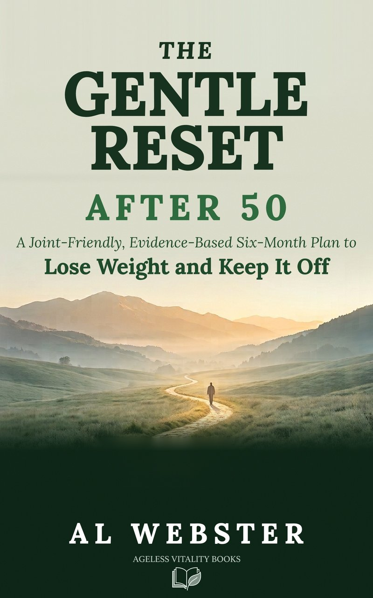
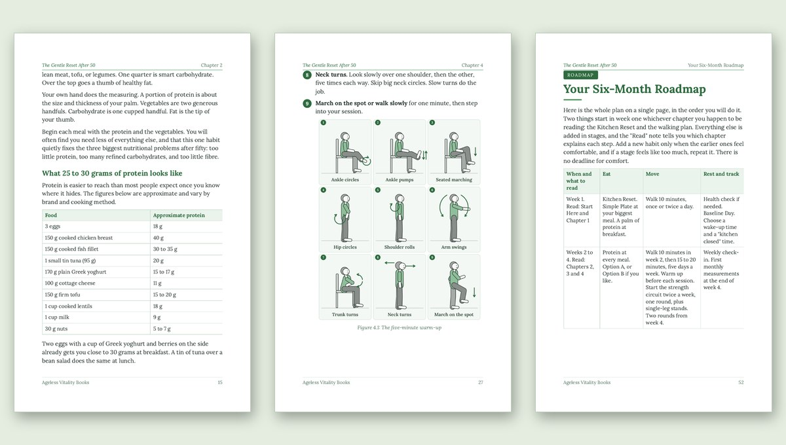
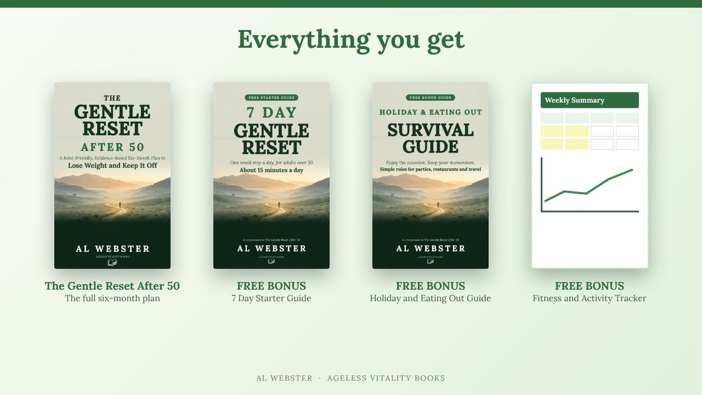
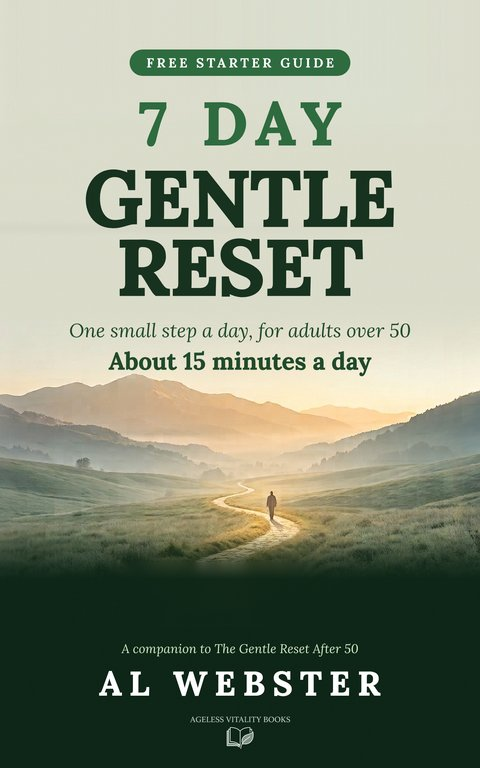

Your Body Changed. The Strategy Should Too.
Small Habits. Steady Strength. Lasting Results.
A joint-friendly, evidence-based six-month plan for adults over 50
Lose weight gently, rebuild strength and protect your energy with a practical roadmap built for the body you have now.
Free guide: instant download, nothing to pay. Book: instant download, 7 day refund.
No crash diets. No punishing workouts. No impossible routines.

Is This You?
You did not fail. The approach did.
After 50, plans built for a younger body often stop working. If any of these sound familiar, you are far from alone.
The scales keep creeping up
You eat much the same as you always have, yet the number on the scales continues to rise. It feels frustrating and perhaps a little unfair.
Your joints decide what you can do
Stairs feel steeper. Long walks need more planning. Gardening, travel and getting up from the floor ask more of your body than they once did.
Hard programs leave you sore
You have started health plans with good intentions, only to find that a sore knee, an aching hip or a stiff back brings progress to a halt.
Your energy fades too early
By mid-afternoon, motivation is harder to find. The day feels longer than it should, and you have less left in the tank.
Sleep no longer feels reliable
You wake during the night, struggle to settle again, or start the morning feeling less rested than when you went to bed.
You want results that last
No more starting over every Monday. You want a practical approach that fits real life and holds up for years.
If this sounds like you, The Gentle Reset After 50 was written for you.
A practical, evidence-based roadmap to help you lose weight gently, rebuild strength, sleep better and create habits that last.
Built on Evidence, Not Trends
Every recommendation in the book traces back to published research. Here is the thinking behind the plan. Full references are in the back of the book.
Protect your muscle
An international expert group recommends that older adults eat more protein than younger adults, around 1.0 to 1.2 grams per kilogram of body weight a day. That is why every meal in the plan starts with protein.
Bauer et al., 2013. Journal of the American Medical Directors Association.Strength and movement
The World Health Organization advises at least 150 minutes of moderate activity a week, muscle strengthening on two or more days, and balance work for older adults. The plan builds toward this gently.
Bull et al., 2020. British Journal of Sports Medicine.Sleep shapes results
In a small trial, dieters who slept 5.5 hours lost less fat than those who slept 8.5 hours on the same diet. Sleep gets its own chapter, not a footnote.
Nedeltcheva et al., 2010. Annals of Internal Medicine.Your metabolism has not collapsed
A large study of energy use across the lifespan found metabolism is steadier through midlife than most people believe. The real changes are in muscle, sleep and recovery, so that is where the plan focuses.
Pontzer et al., 2021. Science.Fasting is optional
A randomised trial found that eating within an eight hour window did not produce more weight loss than regular meal times. The book presents intermittent fasting as a choice, not a requirement.
Lowe et al., 2020. JAMA Internal Medicine.Keeping it off
People who keep weight off for years tend to share habits: regular activity, regular check-ins and consistent eating. The last two chapters are built around them.
Wing and Phelan, 2005. American Journal of Clinical Nutrition.An honest picture of results
Most people in well-run lifestyle programs lose around 5 to 10 percent of their starting weight over six months. Some lose more and some lose less. The book shows you how to work toward that gently and keep it, with gains in strength, energy and sleep along the way.
Inside the Book
Eight chapters, a seven day quick start and a full toolkit, written in plain language.
Your First Seven Days
One small step a day, so you can begin this week without a gym or a strict diet.
Mindset, Readiness and Your Baseline
Why traditional approaches stop working after 50, and how to take your starting measurements.
A Kitchen That Works for You
The Simple Plate, a protein guide, a shopping list and a 14-day starter meal plan. No calorie counting.
Your Eating Rhythm and Intermittent Fasting
Flexible, optional approaches that fit real life, with clear guidance on who should skip them.
Movement, Strength and Confidence
An illustrated warm-up, strength circuit, stretches and a chair circuit for tired or achy days.
Sleep, Stress and Recovery
Practical steps for better sleep, calmer days and steadier energy.
Hormones, Menopause and Medications
What can affect your weight, and when to talk to your doctor.
Tracking Progress, the Gentle Way
Measures that go beyond the scales, with monthly templates and a progress tracker.
Keeping It Off
A long-term maintenance plan, with a buffer zone and a slip plan for real life.
Your Six-Month Gentle Reset Journey
A week-by-week roadmap, so you always know your next step.
Start small
Reset your kitchen, build your plate around protein, begin short daily walks and take your Baseline Day.
Build the habits
Protein at every meal, longer walks and your first gentle strength sessions with a warm-up.
Add strength and rest
Review drinks, improve sleep and recovery, and settle into a twice-weekly circuit.
Fine-tune
Understand hormones and medications, lengthen your walks and build up your circuit.
Track and adjust
Check your progress, make one small tweak if you stall and add a longer weekend walk.
Make it last
Repeat your Baseline Day, compare, and set up your maintenance plan and slip plan.
Take a look inside
Three real pages from the book: the protein guide, the illustrated five minute warm-up and the six-month roadmap.

Swipe to see all three pages

Everything you get
- The Gentle Reset After 50 ebook, over 60 pages
- A six-month roadmap and your first seven days, planned
- Illustrated warm-up, strength and chair circuits
- Protein-first eating with a 14-day starter meal plan
- 7 Day Gentle Reset Starter Guide FREE BONUS
- Holiday and Eating Out Survival Guide FREE BONUS
- Fitness and Activity Tracker for Excel, Google Sheets and Numbers FREE BONUS
A$17.49 one-time payment. 7 day refund.
Instant download. Read on your phone, tablet or computer, or print it.
“You do not need perfect motivation, a perfect plan, or perfect discipline. You simply need to show up for yourself, even in small ways.”

Start free with the 7 Day Gentle Reset Starter Guide
Seven small, joint-friendly steps, one a day, about 15 minutes each. Printable day pages with tick boxes, a week-at-a-glance page, and a free Fitness and Activity Tracker to follow your progress.
Free download. No gym or special equipment needed.
I believe that ageing should feel empowering, not limiting.
Like many people entering their fifties, I discovered that the strategies that had worked for years no longer delivered the same results.
Weight became harder to lose. Recovery took longer. Energy became less predictable. Yet most advice seemed to push harder, eat less and demand more discipline.
Instead of chasing another extreme solution, I began studying the science of healthy ageing and testing small, sustainable changes that could work in real life.
Those lessons ultimately became The Gentle Reset After 50 and the Ageless Vitality Books series.
AL Webster
Ageless Vitality Books
What readers say
"Add a real reader quote here."
First name, town
"Add a real reader quote here."
First name, town
"Add a real reader quote here."
First name, town
Frequently Asked Questions
Straight answers before you decide.
Is this a diet book?
No. It focuses on sustainable habits: protein-first eating, gentle strength, walking, sleep and recovery. There is no calorie counting and no banned food list.
Do I need a gym?
No. The movement plan uses your body weight and a chair, with optional light equipment. Every move has a gentler option for sore or stiff days.
Is fasting required?
No. Intermittent fasting is presented as an optional tool, with clear guidance on who should skip it.
Is this suitable for beginners?
Yes. The plan starts with ten-minute walks and builds slowly, whatever your current fitness.
Is it suitable for men and women?
Yes. The principles apply to both, and the book includes a chapter on hormones and menopause.
How quickly will I see results?
Steady progress beats fast change. Most people in well-run lifestyle programs lose around 5 to 10 percent of their starting weight over six months, and many notice better energy, sleep and strength sooner. Results vary from person to person.
Is this medical advice?
No. The book is for general information and education. Check with your doctor before starting any new eating or exercise plan, especially if you have a health condition or take medication.
What if it is not right for me?
You have 7 days from purchase to ask for a refund. Email mail.avb@gmx.com or use the refund link in your Gumroad receipt, and you will be refunded.
What do I receive, and in what format?
You receive PDF files (the ebook, the Starter Guide and the Holiday and Eating Out Survival Guide) and an Excel tracker that also works in Google Sheets and Apple Numbers. Everything downloads instantly.
Your gentle reset starts this week
Begin with the free Starter Guide, or get the full six-month plan and all three bonuses today, with a 7 day refund.